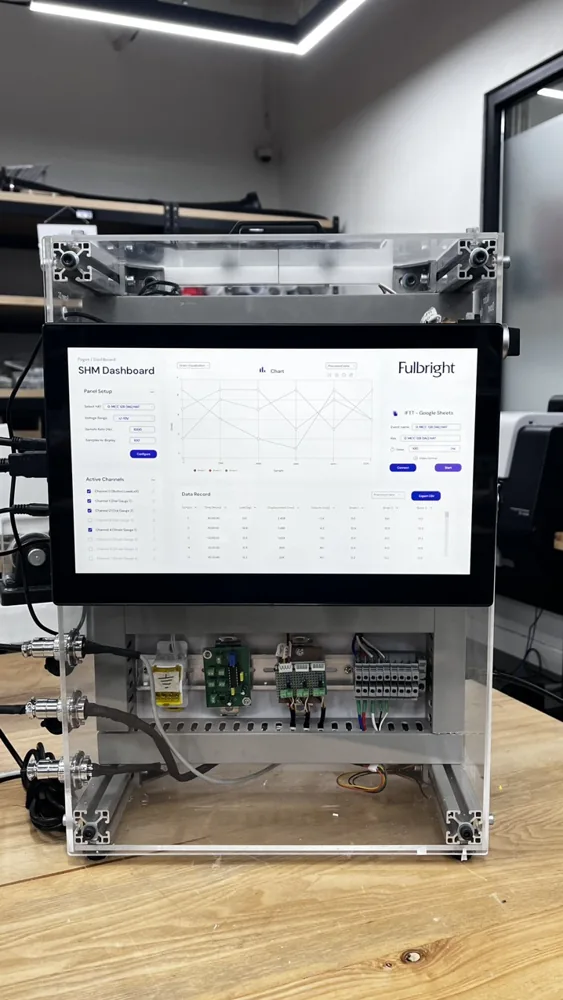
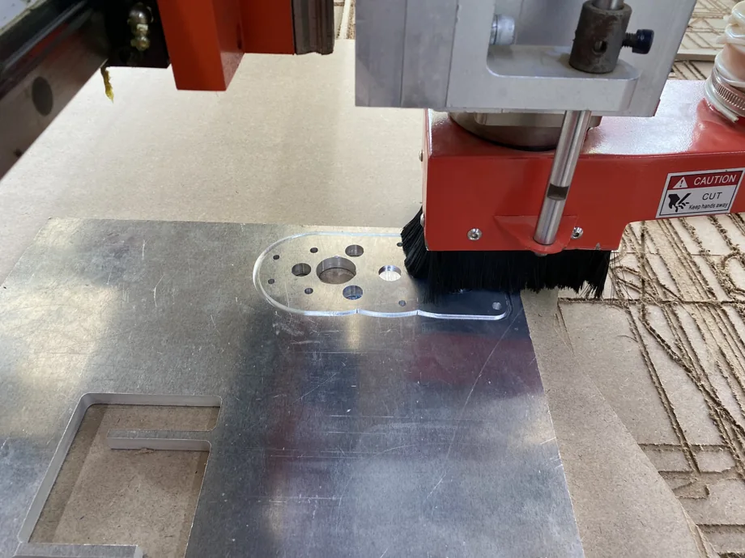

Experimental mechanics / 2026
Finding damage with sparse strain measurements
An instrumented four-point bending rig and a physics-informed model for estimating where a beam has lost stiffness.

- Support span
- 1.2 m
- Strain gauges
- 14
- Stiffness segments
- 7
The question
If sensors are installed before a structure is damaged, can a sparse set of measurements help locate a loss of stiffness? I used a simply supported aluminum beam in four-point bending so the mechanics and loading were well defined.
From bench to model
I worked on the electronics and software connecting the sensors, actuators, and Raspberry Pi. For the capstone, I used paired strain gauges on the top and bottom of the beam at seven stations. The forward model reconstructed beam response from sparse measurements, while the inverse model used a differentiable beam solver to estimate stiffness across seven segments.
What the experiment showed
In a test with a machined pocket in Segment 5, the inverse model identified a stiffness reduction in that segment and also flagged an undamaged segment. The result shows where the method was informative and where it remained ambiguous. The estimated stiffness loss describes the beam’s response at segment scale.
From the build



